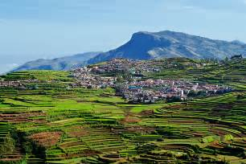

.

Berijam Lake is a reservoir near Kodaikanal town in Dindigul district of Tamil Nadu, South India. It is at the old site of "Fort Hamilton", in the upper Palani hills. The lake, created by a dam with sluice outlets, is part of a micro–watershed development project. Periyakulam town, 18.7 kilometres to the SE, gets its public drinking water from the lake. The lake’s water quality is excellent.
Formerly known as Suicide point, the Green Valley View offers a breathtaking view of the plains, deep valleys and hills. The mesmerizing view of the Vaigai Dam is an unforgettable experience. It used to be known as suicide point because of the dangerous valley which is dense and deep; below the point of more than 5000 feet drop.